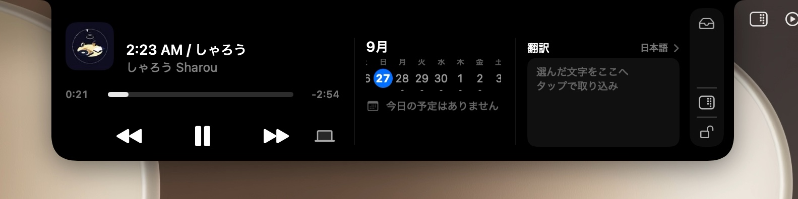

Put the notch to work.
That black strip at the top of your MacBook, now holding what's playing, today's plans, translation and notes.
The song, the week, a translation.
Click to open it, then just glance up.
The clutter on your desktop disappears. Press again and it's back. Your files stay where they are.
Free. Right now.
Notarised by Apple on the Mac. There's a Windows version too.

Put the notch to work.
That black strip at the top of your MacBook, now holding what's playing, today's plans, translation and notes.
What it does
The notch you wrote off, now on your side.
Open it and one long card slides down. From left to right, here's what's on it.
What's playing
Music, Spotify, anything in a browser. Artwork, where you are in the song, back and next.
This week
Swipe two fingers for the weeks either side. A busy day scrolls on the spot.
Translation
Type and it translates on the spot. It happens on your Mac, so nothing you type leaves it.
A place for files
Park a file in the notch. Send it on with AirDrop from there.
Hide the desktop
Each press hides the desktop icons or brings them back.
Try it
Go on, press it.
The little button above does what Noki's menu bar button does.
- MusicOn
- CalendarOn
- TranslationOff
- NotesOn
- File trayOff
- ShortcutsOn
- Volume and brightnessOn
Settings
Put away what you don't use.
You don't have to use all of it. Each feature switches off on its own, and what's off stays out of the notch.
Light
It's always running, so it has to be light.
- CPU while waiting
- 0.00% 30-second average, MacBook Air M4
- Memory
- 54 MB
- Download
- 3 MB
- Checked by Apple
- Notarised
What's playing and what's on your calendar stay on your Mac and are never sent anywhere. Translation happens on your Mac too.
Questions
Is it really free?
Yes, for now. No account needed either.
It's not on the App Store. Is it safe?
It's notarised by Apple. When you open the download, macOS checks it and lets it through.
Will it slow my Mac down?
Measured while waiting, its CPU use was 0.00% (30-second average on a MacBook Air M4). When the pointer is nowhere near the notch, it's barely doing anything.
Is my music, calendar or translated text sent anywhere?
No. Your plans are read from the calendar on your Mac, and macOS does the translating on your Mac.
Do I have to reinstall it for every update?
No. When a new version is out, Noki tells you and updates itself.
Does it work on a Mac without a notch?
Yes. It sits at the top centre of the screen.
What does the Windows version do?
What's playing and its controls, notes, and hiding the desktop icons. The calendar, translation, shortcuts and file tray are Mac-only for now.
Download
Start using the notch today.
Download it, drop it into Applications, open it. That's it.
macOS 14 or later, Apple silicon (M1 or later)
Windows 10 (version 2004 or later) or 11, 64-bit
- Move it into Applications
- Allow Accessibility and Calendar when it asks the first time
- Click the notch
If Windows says it protected your PC, choose More info, then Run anyway.